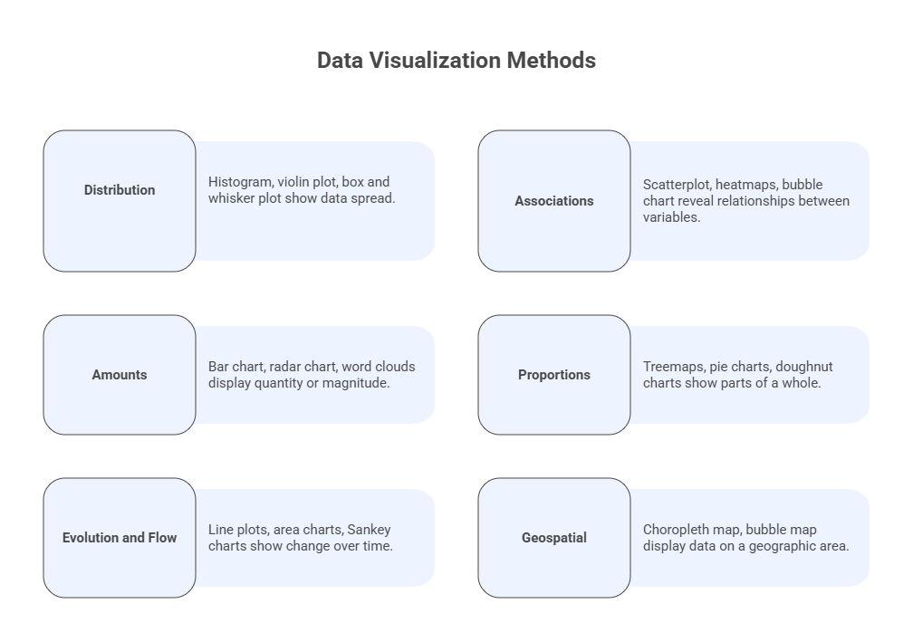
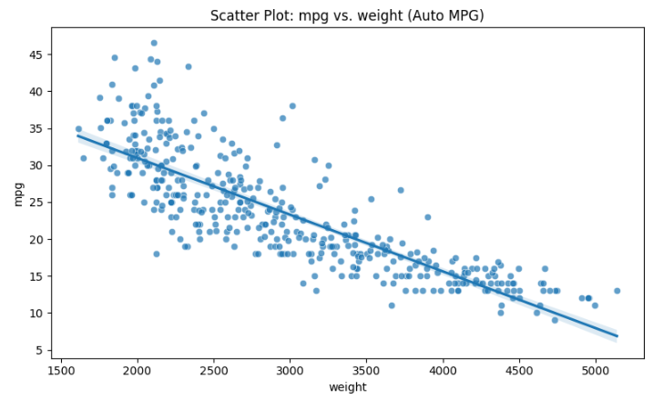
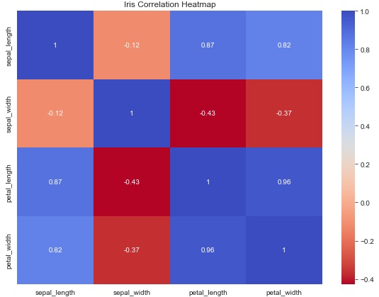
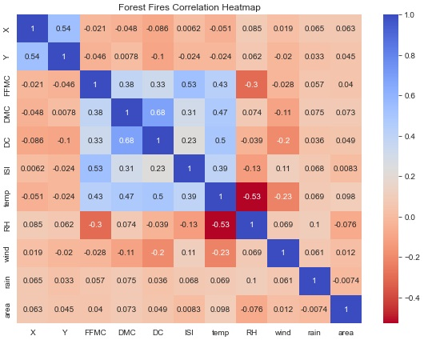
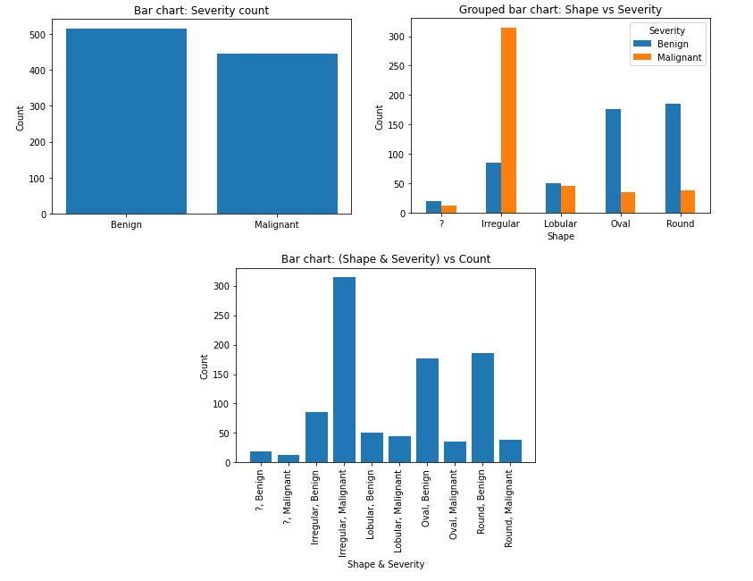
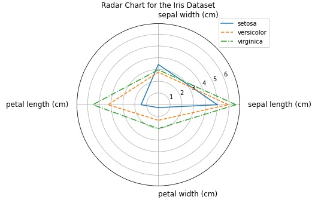
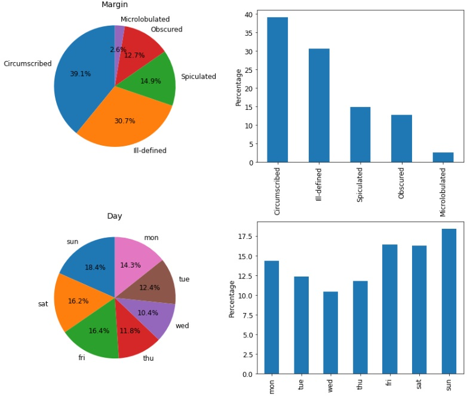
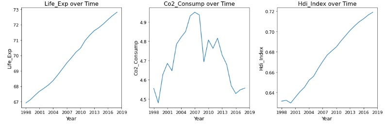
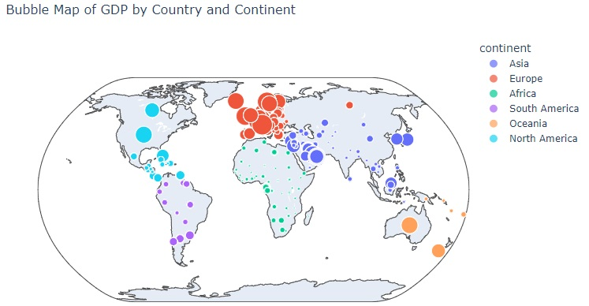

5 — Data Visualization Methods#
This module presents the main data visualization methods used in Advanced Exploratory Data Analysis (AEDA). While Module 4 focused on principles of visualization, this module focuses on methods: which visual representations to use depending on the analytical goal and the nature of the data.
The methods are organized according to the analytical questions they help answer: distributions, associations, amounts, proportions, evolution and flow, and geospatial data.
Learning Objectives#
By the end of this module, students will be able to:
Select appropriate visualization methods based on data type and analytical goal.
Interpret distributions, associations, and patterns using visual representations.
Compare variables using appropriate quantitative and categorical charts.
Analyze temporal evolution, flows, and spatial patterns visually.
Avoid common misuses of visualization methods in exploratory analysis.
5.1 Visualization Selection Guide#
This program adopts a categorization of visualization methods that considers the type of data and visualization generated by the graphs, as follows:
Distribution: Distribution graphs are used to show how the values of a variable are spread across their range. They help us understand the shape, center, variability, and presence of outliers in the data. Common examples include histograms, boxplots, and violin plots.
Associations: Association graphs are used to visualize relationships between two or more variables. They allow us to explore patterns, trends, correlations, clusters, and anomalies in the data. Typical examples include scatter plots, scatterplot matrices, heatmaps, correlograms, and bubble charts.
Amounts: Amount graphs are used to compare the magnitude of values across categories or variables. They are useful for identifying differences and rankings. Examples include bar charts, radar charts, and word clouds.
Proportions: Proportion graphs show how a whole is divided into parts based on their relative contribution. These visualizations emphasize percentages or shares rather than absolute values. Common examples include pie charts, doughnut charts, treemaps, sunburst charts, and dendrograms.
Evolution and Flow: Evolution graphs are used to represent how numeric values change over time, while flow graphs illustrate movement or transitions between stages or categories. Examples include line charts, area charts, Sankey diagrams, and Gantt charts.
Geospatial: Geospatial graphs are used to visualize data associated with geographic locations. They help identify spatial patterns and regional differences. Typical examples include choropleth maps and bubble maps.

Figure: Categories of data visualization methods.
Use the table below as a quick guide to select a visualization method based on the analytical question, the data type, and the main interpretation goal.
Analytical goal |
Typical data |
Recommended charts |
Best for |
Common pitfalls |
|---|---|---|---|---|
Understand a distribution |
1 quantitative variable (continuous) |
Histogram, Boxplot, Violin |
Shape, spread, skewness, outliers |
Too many bins / too few bins; hiding outliers via axis truncation |
Compare distributions across groups |
1 quantitative + 1 categorical |
Boxplot, Violin |
Group comparison, outliers, multimodality |
Ignoring sample size per group; overplotting with too many categories |
Study association (2 variables) |
2 quantitative variables |
Scatter plot |
Direction, strength, clusters, outliers |
Overplotting; using lines for unordered categories |
Study association (3–4 variables) |
2 quantitative + size (quant) + color (cat/quant) |
Bubble chart |
Multivariate patterns at a glance |
Misleading area encoding; hard comparisons when bubble sizes vary too much |
Inspect many pairwise associations |
Many quantitative variables |
Pair plot (scatterplot matrix) |
Correlation patterns and anomalies |
Too many variables → clutter; interpreting correlation as causation |
Summarize a matrix of values |
Tabular matrix / correlation matrix |
Heatmap, Correlogram |
Patterns in matrices, correlation structure |
Poor colormap choice; not centering correlations at 0; missing annotation/scale |
Compare amounts across categories |
Categorical + quantitative |
Bar chart |
Clear magnitude comparisons |
Unsorted bars; too many categories; truncated axes |
Compare profiles across dimensions |
Multiple quantitative variables per entity |
Radar chart (careful) |
Quick “profile” shape comparison |
Difficult precise comparison; poor for many entities; scale differences distort shape |
Show parts of a whole |
Categorical proportions |
Pie/Doughnut (few categories), Treemap (many/hierarchical) |
Share of total, hierarchy |
Too many slices; comparing angles is hard; hiding small values |
Show evolution over time |
Time series |
Line chart |
Trend, seasonality, change points |
Smoothing hides structure; missing time aggregation; too many lines |
Show flows between stages |
Source → target with amounts |
Sankey chart |
Movement of quantities |
Too many nodes/links; ordering issues; hard to read without grouping |
Show project schedule |
Tasks with start/end dates |
Gantt chart |
Task duration and overlap |
Too many tasks without grouping; missing dependencies/context |
Show spatial variation by region |
Geographic polygons + numeric value |
Choropleth map |
Regional intensity patterns |
Mapping counts instead of rates; class breaks/scale choices mislead |
Show spatial quantities at points |
Geographic points + numeric value |
Bubble map |
Location-based magnitude |
Bubble overlap; area vs radius confusion; missing basemap context |
5.1 Distributions#
Distribution plots are used to understand how values of a variable are spread across their range, including shape, center, variability, and outliers.
5.1.1 Histogram#
Purpose:
To explore and visualize the distribution of a single variable.
Common type of data:
Continuous quantitative data.
Interpretation:
The histogram divides the data range into bins and displays the frequency (absolute or relative) of values in each bin. Interpretation focuses on:
Shape (symmetric, skewed, multimodal)
Central tendency
Spread
Presence of gaps and outliers
5.1.2 Boxplot (Box-and-Whisker Plot)#
Purpose:
To visualize and compare distributions using the five-number summary.
Common type of data:
Continuous quantitative data.
Five-number summary:
Minimum
First quartile \(Q_1\)
Median \(Q_2\)
Third quartile \(Q_3\)
Maximum
Outlier detection:
Values are often considered outliers if
\(x < Q_1 - \gamma \cdot IQR \quad \text{or} \quad x > Q_3 + \gamma \cdot IQR\)
where \(IQR = Q_3 - Q_1\) and typically \(\gamma = 1.5\).
Python Code — Boxplot and Histogram#
# CODE 5.1
# Box plot and histogram for a normal distribution
import matplotlib.pyplot as plt
import numpy as np
import scipy.stats as spy
import seaborn as sns
# Generate the random sample data
np.random.seed()
data = np.random.normal(loc=0, scale=1, size=1000)
# Calculate the summary measures
q1, q2, q3 = np.percentile(data, [25, 50, 75])
iqr = q3 - q1
upper_whisker = q3 + 1.5*iqr; lower_whisker = q1 - 1.5*iqr
max_val = np.max(data); min_val = np.min(data)
midpoint = (max_val+min_val)/2
k = spy.kurtosis(data); s = spy.skew(data)
# Plot the boxplot and print the values (Q1, Q2, Q3) on the first subplot
fig, (ax1, ax2) = plt.subplots(nrows=1, ncols=2, figsize=(10,5))
bp = ax1.boxplot(data)
ax1.set_title(f"IQR: {iqr:.2f}", fontsize=16)
ax1.text(0.9, q1, f'Q1: {q1:.2f}', ha='right', va='center', fontsize=14)
ax1.text(0.9, q2, f'Q2: {q2:.2f}', ha='right', va='center', fontsize=14)
ax1.text(0.9, q3, f'Q3: {q3:.2f}', ha='right', va='center', fontsize=14)
# Plot the histogram on the second subplot
sns.histplot(data, bins='auto', ax=ax2)
plt.axvline(x=upper_whisker, color='k', linestyle=':')
plt.axvline(x=lower_whisker, color='k', linestyle=':')
plt.title(f"Kurtosis: {k:.2f}, Skewness: {s: .2f}")
plt.show()

Prompt — Boxplot and Histogram#
You are a data visualization assistant supporting an **Advanced Exploratory Data Analysis (AEDA)** course.
Your task is to **illustrate the distribution of a continuous variable drawn from a normal distribution** using complementary visualizations.
### High-Level Objectives
1. Generate a synthetic dataset that follows a **normal (Gaussian) distribution**.
2. Visually analyze the distribution using **two side-by-side plots**:
- A **box-and-whisker plot** to summarize the distribution using quartiles and dispersion.
- A **histogram** to show the overall shape and frequency of values.
3. Ensure the two plots are presented **in the same figure**, allowing direct comparison between:
- Numerical summary information (via the boxplot), and
- Distributional shape (via the histogram).
4. Clearly communicate key characteristics of the distribution, including:
- Central tendency and spread (via quartiles and IQR),
- Potential outliers (via whiskers),
- Shape-related properties such as **skewness** and **kurtosis**.
5. Annotate the visualizations so that a student can easily interpret:
- The quartile values in the boxplot, and
- Distributional properties in the histogram.
### Expected Outcome
Produce a single figure with:
- A **boxplot** highlighting quartiles and interquartile range.
- A **histogram** showing the distribution of the same data.
- Informative titles and annotations that reinforce how summary statistics and visual structure complement each other in exploratory data analysis.
The emphasis should be on **conceptual clarity and interpretability**, not on implementation details or low-level plotting mechanics.
Note: In this module we are going to use a different style of prompts when compared with the prompts developed in the previous module. This is to illustrate that although we keep the general structure of the prompt, it is possible to create them in different ways and obtain similar (equivalent) results.
5.1.3 Violin Plot#
Purpose:
To visualize distributions by combining a boxplot with a kernel density estimate.
Common type of data:
Continuous quantitative data.
Interpretation:
Width represents data density
Shape reveals multimodality and skewness
Inner quartiles and median can be shown as in a boxplot
Python Code — Box and Violin plot (Iris dataset example)#
# CODE 5.2
# Comparing the Box and Violin plots for the Sepal length of
# the Iris dataset grouped by plant species
import seaborn as sns
import matplotlib.pyplot as plt
from sklearn.datasets import load_iris
# Load the Iris dataset
diris = load_iris()
fig, axs = plt.subplots(nrows=1, ncols=2, figsize=(12, 6))
# Boxplot with data points
sns.boxplot(x=diris.target, y=diris.data[:, 0], ax=axs[0], width=0.6,
boxprops=dict(edgecolor='black'),
whiskerprops=dict(color='black', linestyle='-'),
medianprops=dict(color='black'),
capprops=dict(color='black', linestyle='-'))
sns.stripplot(x=diris.target, y=diris.data[:, 0], ax=axs[0], color='black')
axs[0].set_xticks([0, 1, 2])
axs[0].set_xticklabels(diris.target_names)
axs[0].set_ylabel('Sepal Length (cm)')
axs[0].set_ylim([3.6, 8.6])
axs[0].set_title('Boxplot with Data Points')
# Violinplot with data points
sns.violinplot(x=diris.target, y=diris.data[:, 0], ax=axs[1], inner=None)
sns.stripplot(x=diris.target, y=diris.data[:, 0], ax=axs[1], jitter=True, color='black')
axs[1].set_xticks([0, 1, 2])
axs[1].set_xticklabels(diris.target_names)
axs[1].set_ylabel('Sepal Length (cm)')
axs[1].set_ylim([3.6, 8.6])
axs[1].set_title('Violinplot with Data Points')
# Show plot
plt.tight_layout()
plt.show()

Figure: Boxplots (a) and violin plots (b) of the Iris dataset sepal length grouped by the plant species.
Prompt — Box and Violin plot (Iris dataset example)#
You are a data visualization assistant supporting an **Advanced Exploratory Data Analysis (AEDA)** course.
Your task is to **compare two complementary distribution visualizations for the same variable across multiple groups** using a well-known benchmark dataset.
## High-Level Objectives
1. Use a standard multivariate dataset containing **continuous measurements and categorical group labels**.
2. Focus on a **single continuous variable** and compare its distribution across **three distinct categories**.
3. Create a **single figure with two side-by-side panels**:
- A **box-and-whisker plot** to summarize each group using quartiles, dispersion, and potential outliers.
- A **violin plot** to represent the full distribution shape and density for each group.
4. Overlay **individual data points** on both visualizations to reveal sample size, variability, and potential clustering within each group.
5. Ensure both plots:
- Share the same vertical scale to allow direct visual comparison,
- Clearly label groups and measurement units,
- Highlight how different visualization methods emphasize different aspects of the same data.
## Expected Outcome
Produce a single, well-organized figure that:
- Displays a **boxplot with data points** for the chosen variable, grouped by category.
- Displays a **violin plot with data points** for the same variable and groups.
- Enables students to visually compare:
- Summary statistics versus distribution shape,
- Group differences in central tendency and variability,
- The added value of combining summary-based and density-based visualizations in exploratory data analysis.
The emphasis should be on **conceptual understanding and interpretability**, not on implementation details or low-level plotting mechanics.
5.2 Associations#
Association plots visualize relationships between two or more variables.
5.2.1 Scatter Plot#
Purpose:
To visualize the relationship between two variables.
Common type of data:
Continuous variables on both axes.
Interpretation:
Direction (positive, negative, none)
Strength of association
Clusters and outliers
Python Code — Scatter plot with regression line (Auto MPG example)#
# CODE 5.3
# Scatter plot for association between two quantitative variables
import pandas as pd
import seaborn as sns
import matplotlib.pyplot as plt
from ucimlrepo import fetch_ucirepo
# Load dataset (UCI: Auto MPG)
dauto = fetch_ucirepo(id=9)["data"]["original"]
plt.figure(figsize=(8, 5))
sns.scatterplot(data=dauto, x="weight", y="mpg", alpha=0.7)
sns.regplot(data=dauto, x="weight", y="mpg", scatter=False)
plt.title("Scatter Plot: mpg vs. weight (Auto MPG)")
plt.xlabel("weight")
plt.ylabel("mpg")
plt.tight_layout()
plt.show()

Python Code — Scatter plot with regression line (Auto MPG example)#
You are a data visualization assistant supporting an **Advanced Exploratory Data Analysis (AEDA)** course.
Your task is to **explore and communicate the association between two quantitative variables** using an appropriate visualization technique.
## High-Level Objectives
1. Use a real-world dataset containing **numerical measurements** for multiple variables.
2. Select **two continuous quantitative variables** that are expected to exhibit a meaningful relationship.
3. Create a **scatter plot** to visualize how one variable changes with respect to the other.
4. Enhance the visualization by including a **trend indicator** that helps summarize the overall direction and strength of the relationship.
5. Ensure the visualization clearly supports interpretation by:
- Labeling axes with meaningful variable names and units,
- Using transparency or visual cues to reduce overplotting,
- Including an informative title that describes the relationship being analyzed.
## Expected Outcome
Produce a single, clear figure that:
- Displays a **scatter plot** representing the relationship between two quantitative variables,
- Includes a visual indication of the **overall trend** in the data,
- Allows students to visually assess:
- Direction of association (positive or negative),
- Strength and form of the relationship,
- Presence of clusters or outliers.
The emphasis should be on **conceptual understanding of variable association and visual interpretation**, rather than on implementation details or low-level plotting mechanics.
5.2.2 Bubble Chart#
Purpose:
To visualize the relationship between two quantitative variables, while incorporating an additional quantitative dimension through bubble size (and optionally a categorical or quantitative dimension through color).
Common type of data:
x-axis: continuous quantitative variable
y-axis: continuous quantitative variable
bubble size: quantitative variable representing magnitude
bubble color (optional): categorical groups or quantitative intensity
Interpretation:
Direction and strength of association between the two main variables
How the third variable varies across the x–y space, as indicated by bubble size
Group patterns or segmentation when color is used
Presence of clusters, gaps, and outliers, including unusually large or small bubbles
Python Code — Bubble chart (Gapminder dataset example)#
# CODE 5.3
# Bubble charts with four variables for the Gapminder and Auto MPG datasets
import pandas as pd
import matplotlib.pyplot as plt
import seaborn as sns
# Load the Gapminder dataset
dgapminder = pd.read_csv('gapminder.csv')
# Filter out missing values in 'lifeExp', 'hdi_index', and 'co2_consumption'
dgapminder = dgapminder.dropna(subset=['life_exp', 'hdi_index', 'co2_consump'])
# Set plot features
sns.set_style("whitegrid")
fig, (ax1, ax2) = plt.subplots(nrows=2, ncols=1, figsize=(10, 13))
# Create a bubble chart for the Gapminder dataset
sns.scatterplot(data=dgapminder, x="hdi_index", y="life_exp", hue="continent",
size="co2_consump", sizes=(20, 500), alpha=0.7, ax=ax1)
ax1.set_xlabel("HDI Index", fontsize=14, labelpad=6.0)
ax1.set_ylabel("Life Expectancy", fontsize=14, labelpad=6.0)
ax1.set_title("Life Expectancy vs HDI Index by Continent (Bubble size is CO2 Consumption)", fontsize=16, pad=15.0)
ax1.legend(bbox_to_anchor=(1.05, 1), loc=2, borderaxespad=0.)
# Create a bubble chart for the Auto MPG dataset
dmpg = pd.read_csv('mpg.csv')
sns.scatterplot(data=dmpg, x="acceleration", y="mpg", hue="cylinders",
size="horsepower", sizes=(20, 500), alpha=0.7, ax=ax2)
ax2.set_xlabel("Acceleration", fontsize=14, labelpad=6.0)
ax2.set_ylabel("MPG", fontsize=14, labelpad=6.0)
ax2.set_title("MPG vs Acceleration by Cylinders (Bubble size represents HP)", fontsize=16, pad=15.0)
ax2.legend(bbox_to_anchor=(1.05, 1), loc=2, borderaxespad=0.)
# Adjust the layout to add space between subplots
plt.subplots_adjust(hspace=0.3)
plt.show()

Prompt — Bubble chart (Gapminder dataset example)#
You are a data visualization assistant supporting an **Advanced Exploratory Data Analysis (AEDA)** course.
Your task is to **analyze multivariate relationships using bubble charts**, where multiple variables are encoded simultaneously in a single visualization.
## High-Level Objectives
1. Use two real-world datasets containing **continuous and categorical variables** from different application domains.
2. For each dataset, select **four variables** and encode them visually as follows:
- Two continuous variables mapped to the **x-axis** and **y-axis**,
- One quantitative variable represented by **bubble size**,
- One categorical variable represented by **color**.
3. Create a **single figure composed of two vertically stacked bubble charts**, one for each dataset, to allow comparison across contexts.
4. Ensure each bubble chart:
- Clearly communicates the relationship between the two main quantitative variables,
- Uses bubble size to convey an additional magnitude-related dimension,
- Uses color to distinguish categories or groups.
5. Include clear axis labels, legends, and titles that explicitly explain:
- What variables are being compared,
- What bubble size and color represent,
- How to interpret the visual encoding.
## Expected Outcome
Produce a single, well-organized figure containing:
- A **bubble chart** illustrating relationships among four variables for the first dataset,
- A second **bubble chart** illustrating relationships among four variables for a different dataset,
- Legends and titles that make the multivariate encoding explicit.
The resulting visualizations should allow students to:
- Explore complex multivariate relationships at a glance,
- Compare patterns, clusters, and outliers across groups,
- Understand how bubble charts extend scatter plots by incorporating additional dimensions.
The emphasis should be on **conceptual understanding of multivariate visualization and interpretability**, not on implementation details or low-level plotting mechanics.
5.2.3 Scatterplot Matrix (Pair Plot)#
Purpose:
To visualize pairwise relationships among multiple variables.
Common type of data: Multiple continuous quantitative variables (numeric features). Optionally, one categorical variable used for color grouping (e.g., class/species)
Interpretation:
Pairwise association patterns across all variable pairs
Direction (positive, negative, none) and strength of relationships
Clusters and group separation when color encodes categories
Outliers and unusual observations that appear across multiple projections
Redundancy or collinearity between variables (highly similar patterns across plots)
Python Code — Pair plot (Iris example)#
# CODE 5.4
# Scatterplot matrix for the Iris dataset
import seaborn as sns
import matplotlib.pyplot as plt
from sklearn.datasets import load_iris
# Load the Iris dataset from scikit-learn
iris = load_iris()
# Convert the dataset to a Pandas DataFrame
diris = sns.load_dataset('iris')
# Pairplot
sns.set_style("white")
grid1 = sns.pairplot(diris) # Distributions
grid2 = sns.pairplot(diris, hue='species') # Kernel density estimate (KDE)
plt.show()


Prompt — Pair plot (Iris example)#
You are a data visualization assistant supporting an **Advanced Exploratory Data Analysis (AEDA)** course.
Your task is to **explore and communicate multivariate relationships using scatterplot matrices (pair plots)** for a well-known benchmark dataset.
## High-Level Objectives
1. Use a multivariate dataset containing **multiple continuous variables** and a **categorical class label**.
2. Create a **scatterplot matrix** that displays all pairwise relationships among the continuous variables.
3. Generate two complementary views:
- A scatterplot matrix showing **univariate distributions on the diagonal** and **pairwise scatter plots off the diagonal**.
- A scatterplot matrix enhanced with **color-coded groups** to distinguish categories and reveal class structure.
4. Ensure the visualizations support interpretation by:
- Making it easy to compare relationships across many variable pairs,
- Highlighting patterns of association, redundancy, and separation between groups,
- Revealing clusters, overlaps, and outliers across multiple projections.
## Expected Outcome
Produce visualizations that:
- Present a **complete pairwise overview** of relationships among all numeric variables,
- Show how adding a categorical grouping variable (via color) changes interpretation,
- Allow students to identify:
- Direction and strength of pairwise associations,
- Variable pairs that best separate groups,
- Potential multicollinearity or redundancy among features.
The emphasis should be on **multivariate exploratory insight and visual reasoning**, not on implementation details or plotting mechanics.
5.2.4 Heatmaps and Correlograms#
Purpose:
To visualize magnitude (often correlation) using color intensity.
Common type of data: A matrix of numerical values, typically derived from multiple quantitative variables (especially for correlograms).
Interpretation:
Strength (and sign, when applicable) of relationships between variable pairs
Groups of variables that behave similarly (blocks or clusters in the matrix)
Redundancy / multicollinearity (strong correlations among predictors)
Weak or near-zero relationships that suggest independence
Potential anomalies or unusual patterns in structured data matrices
Python Code — Correlation heatmap (Iris example)#
# CODE 5.5
# Correlation heatmaps (correlograms) for the Iris and Forest Fires datasets
import seaborn as sns
import matplotlib.pyplot as plt
from sklearn.datasets import load_iris
import pandas as pd
import numpy as np
from ucimlrepo import fetch_ucirepo
# Load the Iris dataset from scikit-learn
iris = load_iris()
diris = sns.load_dataset('iris')
diris = diris.drop(columns=['species'])
# Load the Forest Fires dataset
# https://archive.ics.uci.edu/ml/datasets/forest+fires
dforest = fetch_ucirepo(id=162)["data"]["original"]
dforest = dforest.drop(columns=["month", "day"])
# Create a subplot grid with 2 rows and 1 column
fig, axs = plt.subplots(2, 1, figsize=(8, 12))
# Correlation heatmap for Iris dataset
corr_iris = diris.corr()
cmap_inverted = sns.color_palette("coolwarm", as_cmap=True)
cmap_inverted = cmap_inverted.reversed()
sns.heatmap(corr_iris, annot=True, cmap=cmap_inverted, ax=axs[0])
axs[0].set_title('Iris Correlation Heatmap', fontsize=16)
# Correlation heatmap for the Forest Fires dataset
corr_forest = dforest.corr()
sns.heatmap(corr_forest, annot=True, cmap=cmap_inverted, ax=axs[1])
axs[1].set_title('Forest Fires Correlation Heatmap', fontsize=16)
# Set tick labels font size & rotation
for ax in axs:
ax.tick_params(axis='y', labelrotation=0.0)
ax.tick_params(labelsize=11)
plt.show()
 
Prompt — Correlation heatmap (Iris example)#
You are a data visualization assistant supporting an **Advanced Exploratory Data Analysis (AEDA)** course.
Your task is to **analyze and compare correlation structures across multiple datasets** using heatmaps (correlograms).
## High-Level Objectives
1. Use **two real-world multivariate datasets** containing multiple numerical variables from different domains.
2. For each dataset, compute the **pairwise relationships among numeric variables** and represent them in a matrix form.
3. Create a **single figure composed of two vertically stacked correlation heatmaps**, one for each dataset, to facilitate comparison.
4. Encode the strength and direction of relationships using **color intensity**, ensuring:
- Positive and negative relationships are visually distinguishable,
- Strong and weak associations are easy to identify.
5. Enhance interpretability by:
- Including numeric annotations for correlation values,
- Using consistent color scales across both heatmaps,
- Adding clear titles and readable axis labels.
## Expected Outcome
Produce a single, well-organized figure that:
- Displays a **correlation heatmap (correlogram)** for the first dataset,
- Displays a second **correlation heatmap** for a different dataset,
- Allows students to visually compare:
- Strength and sign of correlations within each dataset,
- Structural differences in variable relationships across datasets,
- Patterns of redundancy, independence, and potential multicollinearity.
The emphasis should be on **conceptual understanding of correlation structure and visual interpretation**, not on implementation details or plotting mechanics.
5.3 Amounts#
Amount plots compare absolute magnitudes across categories.
5.3.1 Bar Chart#
Purpose:
To compare quantities (amounts) across discrete categories.
Common type of data:
x-axis: categorical or discrete variable (groups, labels, bins)
y-axis: quantitative variable (count, sum, mean, rate, etc.)
Interpretation:
Which categories have the largest or smallest values
Magnitude differences between categories (gaps and rankings)
Overall pattern of variation across categories (e.g., dominance, balance)
Potential outliers or unusually large/small categories
Python Code — Bar chart#
# CODE 5.6
# Create the bar charts for Severity and Shape vs Severity
# of the mammographic dataset
import pandas as pd
import matplotlib.pyplot as plt
from ucimlrepo import fetch_ucirepo
# fetch dataset
# https://archive.ics.uci.edu/ml/datasets/Mammographic+Mass
dmammo = fetch_ucirepo(id=161)["data"]["original"]
# replace placeholders with labels
dmammo['Severity'] = dmammo['Severity'].map({0:'Benign', 1:'Malignant'})
dmammo['Shape'] = dmammo['Shape'].map({1.0:'Round', 2.0:'Oval', 3.0:'Lobular', 4.0:'Irregular'})
# 1. Calculate and plot the bar chart for 'Severity'
counts = dmammo['Severity'].value_counts().sort_index()
plt.bar(counts.index, counts.values) # Plot the bar chart
plt.title('Bar chart: Severity count')
plt.ylabel('Count'); plt.xlabel('Shape')
# Save and show the plot
plt.savefig("Figure_5_10a_Bar_Charts.svg", format="svg", dpi=1500, bbox_inches='tight')
plt.show()
# 2. Plot a bar chart for 'Shape' in relation to 'Severity'
dmammo.groupby(['Shape', 'Severity']).size().unstack().plot(kind='bar', rot=0)
plt.title('Grouped bar chart: Shape vs Severity', fontsize=16)
plt.ylabel('Count'); plt.xlabel('Shape')
# Save and show the plot
plt.savefig("Figure_5_10b_Bar_Charts.svg", format="svg", dpi=1500, bbox_inches='tight')
plt.show()
# 3. Calculate and plot the bar chart for 'Shape'&'Severity' vs 'Count'
counts = dmammo.groupby(['Shape', 'Severity']).size().reset_index(name='count')
plt.bar(range(len(counts)), counts['count']) # Plot the bar chart
plt.title('Bar chart: (Shape & Severity) vs Count')
plt.xlabel('Shape & Severity'); plt.ylabel('Count')
# Format and rotate the ticks
plt.xticks(range(len(counts)), [', '.join(map(str, tpl)) for tpl in
counts[['Shape','Severity']].to_records(index=False)], rotation=90)
plt.show()

Prompt — Bar chart#
You are a data visualization assistant supporting an **Advanced Exploratory Data Analysis (AEDA)** course.
Your task is to **analyze and compare categorical amounts using bar charts** based on a real-world medical dataset containing diagnostic attributes.
## High-Level Objectives
1. Use a dataset composed of **categorical variables** related to medical diagnosis.
2. Focus on two categorical attributes:
- A primary outcome variable representing **diagnostic severity**,
- A descriptive categorical variable representing **mass shape**.
3. Generate a sequence of **bar chart visualizations** that progressively increase in complexity:
- A **simple bar chart** showing the distribution (counts) of diagnostic severity.
- A **grouped bar chart** comparing the distribution of severity across different shape categories.
- A **combined categorical bar chart** showing counts for each unique combination of shape and severity.
4. Ensure all charts clearly communicate:
- Category labels and counts,
- Differences and contrasts between groups,
- How categorical aggregation affects interpretation.
## Expected Outcome
Produce a set of bar chart figures that:
- Show the overall frequency of diagnostic severity categories,
- Compare severity outcomes across different shape categories using grouped bars,
- Display counts for combined categorical conditions in a single chart,
- Allow students to visually assess:
- Dominant categories,
- Group-level differences,
- How categorical relationships can be explored through aggregation.
The emphasis should be on **conceptual understanding of categorical comparison and aggregation**, not on implementation details or low-level plotting mechanics.
5.3.2 Radar Chart#
Purpose:
To compare multiple variables (dimensions) for one or more entities using a radial layout.
Common type of data:
Multiple quantitative variables measured on the same scale (or normalized to a common scale)
One or more entities/records to compare (e.g., products, models, individuals, regions)
Interpretation:
Relative strengths and weaknesses across variables (profile shape)
Similarity or differences between entities by comparing polygon shapes
Variables where an entity performs unusually high or low
Overall balance or imbalance across dimensions (e.g., “spiky” vs. “rounded” profiles)
Radar charts should be used with care. They can be useful for a quick “profile” view, but they are not ideal for precise comparisons.
Python Code — Radar chart#
# CODE 5.7
# Radar Chart for the Iris dataset available at the Scikitlearn library
import matplotlib.pyplot as plt
import numpy as np
from sklearn.datasets import load_iris
# Load the Iris dataset from Scikitlearn and setup the radar chart
diris = load_iris()
fig = plt.figure(figsize=(10, 5))
axs = fig.add_subplot(polar=True)
angles = np.linspace(0, 2*np.pi, len(diris.feature_names), endpoint=False)
angles = np.concatenate((angles,[angles[0]]))
line = ['-','--','-.']
# For each Iris class, plot the mean values of its features as a line
for i in range(3):
values = diris.data[diris.target == i].mean(axis=0)
values = np.concatenate((values, [values[0]]))
axs.plot(angles, values, label=diris.target_names[i], ls=line[i])
axs.set_xticks(angles[:-1])
axs.set_xticklabels(diris.feature_names)
axs.legend(bbox_to_anchor=(1.2, 1.05))
axs.set_title('Radar Chart for the Iris Dataset')
plt.show()

Prompt — Radar chart#
You are a data visualization assistant supporting an **Advanced Exploratory Data Analysis (AEDA)** course.
Your task is to **compare multivariate profiles across multiple groups** using a radar (spider) chart.
## High-Level Objectives
1. Use a well-known multivariate dataset containing:
- Several **continuous quantitative variables**, and
- A **categorical grouping variable** defining multiple classes.
2. For each group, compute a **representative summary profile** (e.g., average values) across all quantitative variables.
3. Create a **single radar chart** where:
- Each axis represents one quantitative variable,
- Each group is represented by a distinct polygon or line.
4. Ensure the visualization supports comparison by:
- Using a common scale across all variables,
- Clearly distinguishing groups through line style or visual encoding,
- Labeling all variables and groups clearly.
## Expected Outcome
Produce a single radar chart that:
- Displays the multivariate profile of each group in a radial layout,
- Allows students to visually compare:
- Relative strengths and weaknesses across variables,
- Similarities and differences between group profiles,
- Overall balance or imbalance across dimensions.
- Reinforces how radar charts provide a **compact summary view** of multiple variables for comparative exploratory analysis.
The emphasis should be on **conceptual understanding of profile comparison and multivariate visualization**, not on implementation details or low-level plotting mechanics.
5.4 Proportions#
Proportion plots show how a whole is divided into parts.
5.4.1 Pie Chart#
Purpose:
To show how a whole is divided into parts, where each slice represents a category’s proportion of the total.
Common type of data:
One categorical variable with a small number of categories
A quantitative measure that represents counts or shares per category (often frequencies)
Interpretation:
Relative contribution of each category to the total (largest vs. smallest slices)
Dominant categories and whether the distribution is balanced or concentrated
Whether small categories are negligible or meaningful (if visible/labeled)
Python Code — Pie chart and Bar Chart#
# CODE 5.8
# Pie Chart and Grouped Bar Chart for variables 'Margin' of the Mammographic dataset, and
# 'Day' of the Forest Fires dataset - Code with percentage values for the grouped bar chart
import pandas as pd
import matplotlib.pyplot as plt
from ucimlrepo import fetch_ucirepo
# fetch datasets
# https://archive.ics.uci.edu/ml/datasets/Mammographic+Mass
dmammo = fetch_ucirepo(id=161)["data"]["original"]
# https://archive.ics.uci.edu/ml/datasets/forest+fires
dforest = fetch_ucirepo(id=162)["data"]["original"]
# Create a figure with two subplots in each row
fig, ((pie1, bar1), (pie2, bar2)) = plt.subplots(nrows=2, ncols=2, figsize=(12, 12))
# replace placeholders with labels
mm_labeled = dmammo['Margin'].map({1:'Circumscribed', 2:'Microlobulated', 3:'Obscured', 4:'Ill-Defined', 5:'Spiculated'})
# Mammographic dataset - Pie chart
mm = mm_labeled.value_counts()
axes = mm.plot(kind='pie', autopct='%1.1f%%', startangle=90, ax=pie1)
## Format Pie Chart
pie1.set_title('Margin'); pie1.set_ylabel('')
# Mammographic dataset - Grouped bar chart
mm = mm_labeled.value_counts(normalize=True) * 100
mm.plot(kind='bar', ax=bar1, color='#1f77b4')
## Format Bar Chart
bar1.grid(False); bar1.legend().remove()
bar1.set_ylabel('Percentage'); bar1.set_xlabel('')
# Forest Fires dataset - Pie chart
ff = dforest['day'].value_counts()
ff_ordered = ff[['sun', 'sat', 'fri', 'thu', 'wed', 'tue', 'mon']]
axes = ff_ordered.plot(kind='pie', autopct='%1.1f%%', startangle=90, ax=pie2)
## Format Pie Chart
pie2.set_title('Day'); pie2.set_ylabel('')
# Forest Fires dataset - Grouped bar chart
ff = dforest['day'].value_counts(normalize=True) * 100
ff_ordered = ff[['mon', 'tue', 'wed', 'thu', 'fri', 'sat', 'sun']]
ff_ordered.plot(kind='bar', ax=bar2, color='#1f77b4')
## Format Bar Chart
bar2.grid(False); bar2.legend().remove()
bar2.set_ylabel('Percentage'); bar2.set_xlabel('')
plt.show()

Prompt — Pie chart and Bar Chart#
You are a data visualization assistant supporting an **Advanced Exploratory Data Analysis (AEDA)** course.
Your task is to **analyze and compare categorical proportions using complementary visualizations** across two real-world datasets from different application domains.
## High-Level Objectives
1. Use **two datasets** containing categorical variables that represent meaningful groupings:
- One related to **medical diagnostic attributes**,
- One related to **environmental or temporal conditions**.
2. For each dataset, focus on **one categorical variable** and examine how its categories are distributed.
3. Create a **single figure organized as a 2 × 2 grid** of plots, where each row corresponds to one dataset:
- A **pie chart** to visualize the relative proportions of categories as parts of a whole,
- A **bar chart** to display the same information using percentages for easier comparison.
4. Ensure consistency between paired plots by:
- Using the same underlying data for the pie chart and the bar chart,
- Expressing bar chart values as **percentages**,
- Ordering categories meaningfully to support interpretation.
5. Clearly label all plots with informative titles and axis annotations so that students can easily understand:
- What variable is being visualized,
- How categories contribute to the total,
- How different visualization types affect interpretability.
## Expected Outcome
Produce a single, well-structured figure that:
- Displays **pie charts** showing the proportional breakdown of categories for each dataset,
- Displays corresponding **bar charts** showing the same proportions using percentages,
- Enables students to compare:
- Pie charts versus bar charts for representing proportions,
- Distribution patterns across different datasets,
- The advantages and limitations of each visualization type for proportion data.
The emphasis should be on **conceptual understanding of proportion-based visualizations and comparative interpretation**, not on implementation details or low-level plotting mechanics.
5.4.2 Doughnut Chart#
Purpose:
A variation of the pie chart that shows proportions of a whole, but with a hollow center that can be used for labels or summary information.
Common type of data:
One categorical variable with a small number of categories
A quantitative measure representing counts or shares per category (often frequencies)
Interpretation:
Relative contribution of each category to the total (largest vs. smallest segments)
Overall balance or concentration of the distribution
Optional center label can reinforce a key total or KPI (e.g., total count, overall rate)
Python Code — Doughnut chart#
# CODE 5.9
# Doughnut chart for variables 'Margin' of the Mammographic dataset, and 'Day' of the
# Forest Fires dataset - Code with percentage values for the grouped bar chart
import pandas as pd
import matplotlib.pyplot as plt
from ucimlrepo import fetch_ucirepo
# fetch datasets
# https://archive.ics.uci.edu/ml/datasets/Mammographic+Mass
dmammo = fetch_ucirepo(id=161)["data"]["original"]
# https://archive.ics.uci.edu/ml/datasets/forest+fires
dforest = fetch_ucirepo(id=162)["data"]["original"]
# Create a figure with two subplots in each row
fig, (dnut1, dnut2) = plt.subplots(nrows=1, ncols=2, figsize=(12, 10))
# Mammographic dataset - Doughnut chart
## Replace placeholders with labels
mm = dmammo['Margin'].map({1:'Circumscribed', 2:'Microlobulated', 3:'Obscured', 4:'Ill-Defined', 5:'Spiculated'}).value_counts()
mm.plot(kind='pie', autopct='%1.1f%%', startangle=90, ax=dnut1,
wedgeprops={'width': 0.3}, fontsize=14, colormap=plt.cm.Blues)
dnut1.set_title('Margin', fontsize=16); dnut1.set_ylabel('')
for ax in dnut1.texts[1::2]:
ax.set_bbox(dict(fc='white', ec='black', alpha=0.875, boxstyle='Round'))
### Slightly adjust overlapping text
x, y = dnut1.texts[1::2][3].get_position()
dnut1.texts[1::2][3].set_position((x + 0.1, y - 0.05))
# Forest Fires dataset - Doughnut chart
ff = dforest['day'].value_counts()
ff.plot(kind='pie', autopct='%1.1f%%', startangle=90, ax=dnut2,
wedgeprops={'width': 0.5}, fontsize=14, colormap=plt.cm.Blues)
dnut2.set_title('Day', fontsize=16); dnut2.set_ylabel('')
for ax in dnut2.texts[1::2]:
ax.set_bbox(dict(fc='white', ec='black', alpha=0.875, boxstyle='Round'))
plt.show()

Prompt — Doughnut chart#
You are a data visualization assistant supporting an **Advanced Exploratory Data Analysis (AEDA)** course.
Your task is to **analyze and communicate categorical proportions using doughnut charts** for two real-world datasets from different application domains.
## High-Level Objectives
1. Use **two datasets** containing categorical variables that represent meaningful groupings:
- One related to **medical diagnostic characteristics**,
- One related to **environmental or temporal conditions**.
2. For each dataset, select **one categorical variable** and examine how its categories contribute to the whole.
3. Create a **single figure with two side-by-side doughnut charts**, one for each dataset, to support visual comparison.
4. Ensure each doughnut chart:
- Represents category proportions using **angular segments**,
- Displays **percentage values** directly on the chart,
- Uses a hollow center to improve readability and visual balance.
5. Enhance interpretability by:
- Clearly labeling each chart with an informative title,
- Using consistent color schemes,
- Making category proportions easy to distinguish at a glance.
## Expected Outcome
Produce a single, well-organized figure that:
- Displays a **doughnut chart** showing the proportional distribution of categories for the first dataset,
- Displays a second **doughnut chart** for a different dataset,
- Allows students to:
- Identify dominant and minor categories,
- Compare proportional structures across datasets,
- Understand how doughnut charts relate to (and differ from) traditional pie charts.
The emphasis should be on **conceptual understanding of proportion-based visualization and comparative interpretation**, not on implementation details or low-level plotting mechanics.
5.4.3 Treemap#
Purpose:
To visualize proportions using nested rectangles, especially for many categories and for hierarchical data.
Common type of data:
Categorical data with a quantitative measure (e.g., counts, sales, population)
Often includes a hierarchy (e.g., Category → Subcategory → Item), but can also be used for a single-level list of categories
Interpretation:
Relative contribution of each category to the whole (rectangle area represents magnitude)
Dominant categories and how the total is partitioned
Within-group composition when hierarchical nesting is present
Patterns of concentration (few large rectangles vs. many small ones)
Python Code — Treemap#
# CODE 5.10
# Generate the treemap for the Gapminder dataset having the countries as the
# rectangles, their GDP in the slice sizes, and the continents in the colors
import pandas as pd
import plotly.express as px
# Load the Gapminder dataset
dgapminder = pd.read_csv('gapminder.csv')
# Calculate total GDP per continent
gdp_per_continent = dgapminder.groupby('continent')['gdp'].sum()
# Calculate the percentage of GDP by country in each continent
gdp_perc_by_country = dgapminder.groupby(['continent','country'])['gdp'].sum()/gdp_per_continent
# Set a minimum size for the rectangles
min_size = 0.05
# Filter out rectangles smaller than the minimum size
gdp_perc_by_country_filtered = gdp_perc_by_country[gdp_perc_by_country > min_size]
# Calculate the percentage of GDP by country in each continent
gdp_perc_by_country = dgapminder.groupby(['continent','country'])['gdp'].sum()/gdp_per_continent
# Reset the index for Plotly Express
gdp_perc_by_country_filtered = gdp_perc_by_country_filtered.reset_index()
# Create the treemap using Plotly Express
fig = px.treemap(gdp_perc_by_country_filtered,
path=['continent', 'country'],
values='gdp',
title=f'GDP by Country and Continent: Values greater than {min_size*100:.1f}%',
width=1150, height=700)
# Update layout and legend
fig.update_traces(textinfo='label+percent parent')
fig.update_layout(margin=dict(t=40, b=0, l=0, r=0), title_x=0.5, legend_title_text='Continent', uniformtext=dict(minsize=12, mode='show'))
# Print the tree structure
print(gdp_perc_by_country)
fig.show()

Prompt — Treemap#
You are a data visualization assistant supporting an **Advanced Exploratory Data Analysis (AEDA)** course.
Your task is to **analyze and communicate hierarchical proportions using a treemap visualization** based on a global socioeconomic dataset.
## High-Level Objectives
1. Use a dataset containing **countries grouped within higher-level regions (continents)** and a quantitative measure representing **economic magnitude**.
2. Organize the data hierarchically so that:
- The top level represents **continents**,
- The nested level represents **countries** within each continent.
3. Create a **treemap** where:
- Each rectangle represents a country,
- Rectangle size encodes the country’s **contribution to total GDP** within its continent,
- Color distinguishes continents.
4. Improve readability and interpretability by:
- Filtering out very small contributions so the treemap focuses on the most relevant categories,
- Displaying labels and percentage information to clarify how each country contributes to its parent group.
5. Ensure the visualization clearly communicates:
- How total GDP is distributed across continents,
- How GDP is partitioned among countries within each continent,
- Differences in concentration and dominance across regions.
## Expected Outcome
Produce an interactive treemap that:
- Displays **hierarchical proportions** of GDP by continent and country,
- Allows students to visually assess:
- Relative economic weight of countries within continents,
- Dominant contributors versus minor contributors,
- Patterns of concentration across regions.
- Demonstrates how treemaps effectively summarize **complex hierarchical data** in a compact visual form.
The emphasis should be on **conceptual understanding of hierarchical proportion visualization and interpretation**, not on implementation details or low-level plotting mechanics.
5.5 Evolution and Flow#
These plots show change over time or movement between states.
5.5.1 Line Chart#
Purpose:
To visualize trends and temporal evolution by showing how a value changes over an ordered sequence (most commonly time).
Common type of data:
x-axis: ordered variable (typically time such as date, month, year; or any ordered index)
y-axis: quantitative variable (measurement, count, rate, index)
Optional: multiple series (categories/groups) plotted as multiple lines
Interpretation:
Overall trend (increasing, decreasing, stable)
Rate of change (steeper slope indicates faster change)
Seasonality or recurring cycles (repeating patterns)
Peaks, dips, and change points (sudden shifts)
Differences between groups when multiple lines are shown
Python Code — Line chart (time series example)#
# CODE 5.11a
# Create the line charts for Life Expectancy, CO2 Consumption, and
# HDI index vs the year for the Gapminder dataset
import pandas as pd
import matplotlib.pyplot as plt
# Load the dataset, select the target variables and group by year
# Load the Gapminder dataset
dgapminder = pd.read_csv('gapminder.csv')[['life_exp', 'co2_consump', 'hdi_index', 'year']]
dby = dgapminder.groupby('year').mean() # dby: data by year
# Loop through a list of tuples and plot each variable in a separate subplot
fig, axes = plt.subplots(ncols=3, figsize=(18,5))
for i, var in enumerate(['life_exp', 'co2_consump', 'hdi_index']):
axes[i].plot(dby.index, dby[var])
axes[i].set_title(var.replace('_', ' ').title() + ' over Time', fontsize=16)
axes[i].set_xlabel('Year', fontsize=14)
axes[i].set_ylabel(var.replace('_', ' ').title(), fontsize=14)
axes[i].xaxis.set_major_locator(plt.MaxNLocator(integer=True))
axes[i].tick_params(axis='both', which='major', labelsize=12)
# Adjust the layout to add space between subplots
plt.subplots_adjust(wspace=0.3)
plt.show()

Prompt — Line chart (time series example)#
You are a data visualization assistant supporting an **Advanced Exploratory Data Analysis (AEDA)** course.
Your task is to **analyze temporal trends using line charts** for multiple socioeconomic indicators derived from a global dataset.
## High-Level Objectives
1. Use a dataset containing **time-indexed observations** of multiple quantitative indicators.
2. Focus on **three continuous variables** that capture different aspects of global development.
3. Aggregate the data by **year** to obtain representative values for each time point.
4. Create a **single figure composed of three side-by-side line charts**, one for each indicator, to facilitate comparison.
5. Ensure each line chart:
- Uses **time (year)** on the horizontal axis,
- Shows how the indicator **evolves over time** on the vertical axis,
- Includes clear titles, axis labels, and readable tick marks.
## Expected Outcome
Produce a single, well-organized figure that:
- Displays **three line charts**, each showing the temporal evolution of a different indicator,
- Allows students to visually assess:
- Long-term trends (increasing, decreasing, stable),
- Differences in growth patterns across indicators,
- Periods of acceleration, stagnation, or change.
- Demonstrates how line charts are used to study **evolution and trends over time** in exploratory data analysis.
The emphasis should be on **conceptual understanding of temporal visualization and trend interpretation**, not on implementation details or low-level plotting mechanics.
5.5.2 Sankey Chart#
Purpose:
To visualize flows between stages or categories (source → target), emphasizing how quantities move or are distributed across a system.
Common type of data:
Source category (where the flow comes from)
Target category (where the flow goes to)
Quantitative value representing flow magnitude (count, volume, cost, probability, etc.)
Optional: multiple stages (multi-step flows) or grouped categories
Interpretation:
Main pathways and dominant transfers (thickest links)
How totals split across targets (branching structure)
Bottlenecks, losses, or concentration of flow in specific routes
Comparison of contributions from different sources to the same target
Python Code — Sankey chart#
# CODE 5.12
# Sankey diagram with the flow of an academic career progression
import plotly.graph_objects as go
nodes = dict(
type='sankey',
node=dict(
pad=200,
thickness=20,
line=dict(color='black', width=0.5),
label=["Undergraduate", "M.Sc.", "Ph.D.", "Postdoc", "Faculty", "Industry"],
color=["#3D9970", "#FF851B", "#FFDC00", "#7FDBFF", "#FF7F99", "#D62728"]),
# Define the links between the nodes
link=dict(source=[0, 0, 0, 0, 1, 1, 1, 2, 2, 2, 3, 3, 4, 4, 5, 5],
target=[1, 2, 4, 5, 2, 4, 5, 3, 4, 5, 4, 5, 4, 5, 5, 4],
value=[20,10,10,60,40,40,20,40,40,20,70,30,80,20,80,20]))
# Define the layout of the Sankey diagram
layout = dict(title="Flow of Academic Career Progression", font=dict(size=14), margin=dict(t=150))
# Create the figure
fig = go.Figure(data=[nodes], layout=layout)
# Show the figure
fig.show()

Prompt — Sankey chart#
You are a data visualization assistant supporting an **Advanced Exploratory Data Analysis (AEDA)** course.
Your task is to **illustrate flows between stages using a Sankey diagram**, focusing on how individuals move through different categories in a structured progression.
## High-Level Objectives
1. Represent a process composed of **discrete stages or categories** connected by transitions.
2. Model the process as a set of **source → target flows**, where each transition carries a quantitative magnitude.
3. Create a **single Sankey diagram** in which:
- Each node represents a distinct stage in the process,
- Each link represents movement from one stage to another,
- Link width encodes the **relative volume or intensity** of the flow.
4. Ensure the visualization clearly communicates:
- The main pathways through the system,
- Alternative routes and branching points,
- Relative importance of different transitions.
5. Use clear labels, colors, and layout so that the overall structure of the flow can be understood at a glance.
## Expected Outcome
Produce a Sankey diagram that:
- Shows how quantities move across multiple stages of a process,
- Highlights dominant flows and secondary pathways,
- Allows students to visually identify:
- Where most flow originates and where it ends,
- How flows split or converge across stages,
- Patterns of progression, diversion, or concentration.
The emphasis should be on **conceptual understanding of flow visualization and system dynamics**, not on implementation details or low-level plotting mechanics.
5.5.3 Gantt Chart#
Purpose:
To visualize tasks over time, showing when activities start, how long they last, and how they overlap within a schedule.
Common type of data:
A list of tasks or activities (categorical labels)
Start time/date and end time/date (or start + duration) for each task
Optional: task grouping (phases), milestones, dependencies, or assigned resources
Interpretation:
Task duration (bar length)
Timeline structure and overlap between tasks (parallel vs. sequential work)
Critical periods with many concurrent tasks (workload concentration)
Schedule gaps, delays, or potential bottlenecks (tasks that constrain progress)
Python Code — Gantt chart#
# CODE 5.13
# Gantt Chart to show the career evolution for the stages in the previous Sankey Chart
import plotly.express as px
# Define the tasks and their start/end dates
tasks = ["Undergraduate", "M.Sc.", "Ph.D.", "Postdoc", "Faculty", "Industry"]
start_dates = ["2022-08", "2026-08", "2027-08", "2030-08", "2032-08", "2042-08"]
end_dates = ["2026-05", "2027-05", "2030-05", "2032-05", "2042-05", "2057-05"]
# Create a DataFrame with the task data
data = {'Career Stage': tasks, 'Start': start_dates, 'Finish': end_dates}
df = pd.DataFrame(data)
# Create the Gantt chart
fig = px.timeline(df, x_start="Start", x_end="Finish", y="Career Stage")
# Customize the Gantt chart appearance
fig.update_layout(
title="Gantt Chart of Career Evolution", title_font=dict(size=24),
xaxis_title="Year", xaxis=dict(title_font=dict(size=20),tickfont=dict(size=16)),
yaxis_title="Career Stage", yaxis=dict(title_font=dict(size=20),tickfont=dict(size=16))
)
fig.show()

Prompt — Gantt chart#
You are a data visualization assistant supporting an **Advanced Exploratory Data Analysis (AEDA)** course.
Your task is to **represent the temporal evolution of a structured process using a Gantt chart**, focusing on how different stages unfold over time.
## High-Level Objectives
1. Model a process composed of **sequential stages**, where each stage occupies a specific time interval.
2. Associate each stage with a **start date and an end date**, reflecting its duration.
3. Create a **single Gantt chart** where:
- Each horizontal bar represents one stage of the process,
- The horizontal axis represents **time**,
- The vertical axis lists the stages in a meaningful order.
4. Ensure the visualization clearly communicates:
- The duration of each stage,
- The chronological order of stages,
- How stages follow or overlap one another over time.
5. Use clear titles and axis labels so that the timeline can be interpreted without additional context.
## Expected Outcome
Produce a Gantt chart that:
- Displays the **time span** of each stage in the process,
- Allows students to visually assess:
- Relative duration of stages,
- Overall length of the process,
- Points of transition from one stage to the next.
- Reinforces how Gantt charts are used to visualize **time-based progression and planning** in exploratory data analysis.
The emphasis should be on **conceptual understanding of temporal scheduling and progression**, not on implementation details or low-level plotting mechanics.
5.6 Geospatial#
Geospatial plots visualize data linked to geographic locations.
5.6.1 Choropleth Map#
Purpose:
To visualize spatial variation of a variable aggregated by region (e.g., country, state, county) using color intensity.
Common type of data:
Geographic regions (polygons) with identifiers (e.g., ISO codes, state names, county IDs)
One quantitative variable aggregated at the region level (rate, index, average, percentage, density, etc.)
Optional: time dimension (maps across multiple years) or categorical grouping for faceting
Interpretation:
Which regions have higher or lower values (spatial highs/lows)
Regional patterns such as clusters, gradients, or geographic disparities
Outlier regions that differ strongly from neighbors
Broad geographic trends (e.g., coastal vs inland, north vs south)
Python Code — Choropleth#
# CODE 5.14
# Choropleth map and its variations for Geopandas with naturalearth_lowres dataset
import geopandas as gpd
import matplotlib.pyplot as plt
import numpy as np # Needed for infinity in breaks
# Load the dataset
world = gpd.read_file('https://naciscdn.org/naturalearth/110m/cultural/ne_110m_admin_0_countries.zip')
fig, (ax1, ax2) = plt.subplots(2, 1, figsize=(15, 10))
# Plot a choropleth map for population estimate
world.plot(column='POP_EST', cmap='Reds', legend=True, ax=ax1, edgecolor='black')
ax1.set_title("Unclassed Population Estimate")
# Define breaks for population estimate data
breaks = [0, 20000000, 50000000, 100000000, 250000000, 1000000000, np.inf]
# Extract labels from breaks (excluding infinity & Dividing by 1 million)
labels = [f"{int(b/1e6)}M" for b in breaks[:-1]]
# Assign each country to a class based on its population estimate
world['pop_class'] = pd.cut(world['POP_EST'], bins=breaks, labels=labels, include_lowest=True, right=False)
# Plot a choropleth map with classed data
world.plot(column='pop_class', cmap='OrRd', legend=True, ax=ax2,
edgecolor='black', legend_kwds= {'title': "Population Class", 'loc': 'upper left', 'bbox_to_anchor': (1, 1)}
)
ax2.set_title("Classed Population Estimate")
plt.show()

Prompt — Choropleth#
You are a data visualization assistant supporting an **Advanced Exploratory Data Analysis (AEDA)** course.
Your task is to **explore and compare spatial variation using choropleth maps**, highlighting how different classification choices affect interpretation.
## High-Level Objectives
1. Use a **global geospatial dataset** containing country-level boundaries and an aggregated quantitative attribute.
2. Select a **single numeric variable aggregated by region** (e.g., population estimate).
3. Create a **single figure with two vertically stacked choropleth maps**:
- An **unclassed choropleth**, where color intensity represents the raw magnitude of the variable.
- A **classed choropleth**, where values are grouped into meaningful intervals and displayed using categorical color classes.
4. Ensure both maps:
- Use consistent geographic boundaries,
- Clearly differentiate regions using color,
- Include legends that explain how values or classes are encoded.
5. Emphasize how visualization choices influence interpretation by:
- Comparing continuous vs. classed representations,
- Highlighting regional contrasts, dominant areas, and extremes,
- Showing how classification thresholds can simplify or alter perceived spatial patterns.
## Expected Outcome
Produce a figure that:
- Displays **two choropleth maps** of the same variable using different encoding strategies,
- Allows students to visually compare:
- Raw magnitude versus categorized representation,
- Subtle gradients versus simplified classes,
- Strengths and limitations of each approach.
- Demonstrates best practices for **geospatial visualization and map interpretation** in exploratory data analysis.
The emphasis should be on **conceptual understanding of spatial aggregation, classification, and visual perception**, not on implementation details or low-level plotting mechanics.
5.6.2 Bubble Map#
Purpose:
To represent quantities at geographic locations using circles sized by magnitude, enabling comparison of values across space.
Common type of data:
Geographic locations (points) given by coordinates (latitude/longitude) or place identifiers
One quantitative variable encoded by bubble size (count, volume, rate, etc.)
Optional: a categorical variable encoded by color, or a time variable for animation/faceting
Interpretation:
Where the largest or smallest values occur (spatial concentration)
Geographic clusters of high or low magnitude
Outlier locations with unusually large or small values
Broad spatial patterns that emerge from point-wise variation (e.g., regional hotspots)
Python Code — Bubble map#
# CODE 5.16
# Bubble chart for the Gapminder dataset
import pandas as pd
import geopandas as gpd
import matplotlib.pyplot as plt
import plotly.express as px
# Load the Gapminder dataset
dgapminder = pd.read_csv('gapminder.csv')
dgapminder['gdp'] = dgapminder['gdp'].fillna(0)
# Filter dataset for year 1998
dgapminder = dgapminder[dgapminder['year'] == 1998]
# Plot a Bubble map
fig = px.scatter_geo(dgapminder, locations='country', locationmode='country names',
size='gdp', color='continent',
hover_name='country', projection='natural earth')
fig.update_layout(title={
'text': 'Bubble Map of GDP by Country and Continent',
'font': {'size': 16}})
fig.show()

Prompt — Bubble map#
You are a data visualization assistant supporting an **Advanced Exploratory Data Analysis (AEDA)** course.
Your task is to **visualize geographic variation in quantitative data using a bubble map**, combining spatial location with magnitude and categorical grouping.
## High-Level Objectives
1. Use a **global dataset** containing country-level observations, including:
- Geographic identifiers,
- A quantitative variable representing magnitude,
- A categorical variable representing groups or regions.
2. Focus on a **single snapshot in time** to simplify interpretation and emphasize spatial comparison.
3. Create a **bubble map** where:
- Each country is positioned according to its geographic location,
- Bubble size represents the magnitude of the selected quantitative variable,
- Bubble color distinguishes categories such as regions or continents.
4. Ensure the visualization clearly communicates:
- Where large and small values are geographically concentrated,
- Regional patterns and contrasts,
- How magnitude and category interact across space.
5. Include clear titles and interactive cues (e.g., hover information) so that the map can be easily interpreted.
## Expected Outcome
Produce a single bubble map that:
- Displays **country-level quantities** using circles scaled by magnitude,
- Uses color to group countries into broader regions,
- Allows students to visually assess:
- Spatial concentration of high and low values,
- Geographic disparities across regions,
- The added value of combining maps with bubble-size encoding.
The emphasis should be on **conceptual understanding of geospatial magnitude visualization and spatial interpretation**, not on implementation details or low-level plotting mechanics.
Reflection#
How does the choice of visualization method affect the insights you can extract from the same dataset?
When do visualizations reveal patterns or anomalies that summary statistics fail to show?
How can different visual encodings (position, length, area, color) influence interpretation accuracy?
In what situations might a visualization mislead rather than clarify the underlying data?
What factors should guide your decision when selecting a visualization method for exploratory analysis?
Further Reading#
Refer to the course syllabus bibliography, especially:
De Castro, L. N. (2026). Exploratory Data Analysis: Descriptive Analysis, Visualization, and Dashboard Design. CRC Press.
Wilke, C. O. (2019). Fundamentals of Data Visualization. O’Reilly.
Knaflic, C. N. (2015). Storytelling with Data. Wiley.
Ward, M., Grinstein, G. G., & Keim, D. (2015). Interactive Data Visualization: Foundations, Techniques, and Applications (2nd ed.). CRC Press.